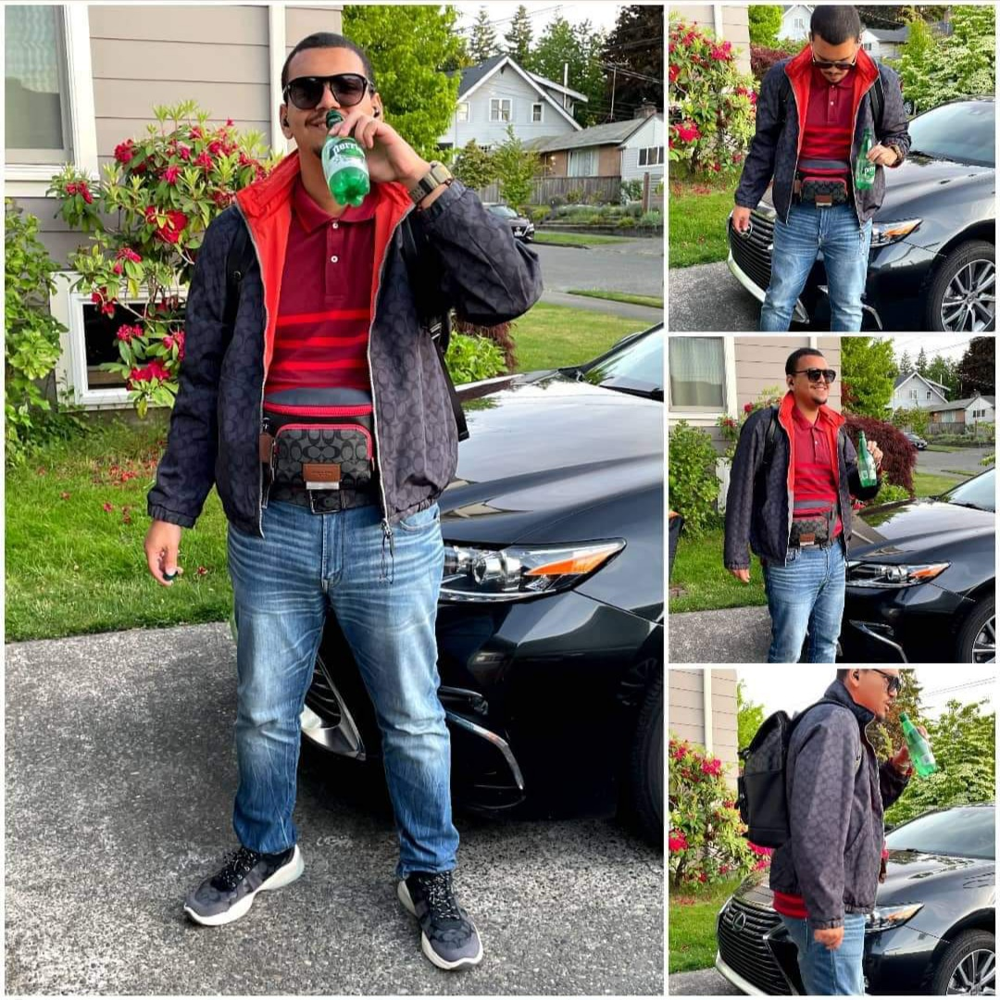
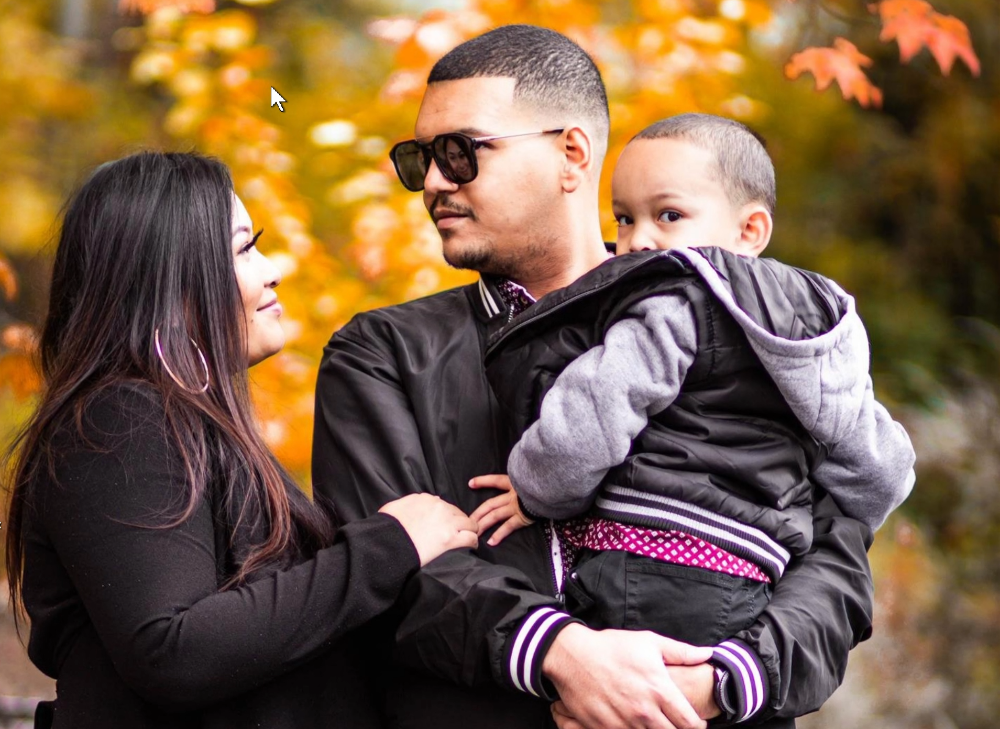

My Name is Cedric Vallieu
I’m head of support at DevHub
My typical day to day is managing the frontlines of devhub support channels maintaining our SLAs with clients, running data reports, and resolving issues with errors and bugs and SSL on sites and proxies for major brands and enterprises utilizing our technology working directly under the CEO and CTO.
I use the terminal daily and use sequel to access our databases at DevHub
Education:
Code Fellows - Seattle, WA
Code 401: Advanced Software Development in Python
Apr 2022 - Oct 2022
Code Fellows - Seattle, WA
Code 301: Intermediate Software Development
Dec 2021 - Feb 2022
Code Fellows - Seattle, WA
Code 201: Foundations of Software Developmen
Sept 2021 - Nov 2021
Code Fellows - Seattle, WA
Code 102: Intro to Software Development
Sept 2021 - Sept 2021
Code Fellows - Seattle, WA
Code 101: Explore Software Development
July 2021 - July 2021
Franklin High School - Seattle, WA
Diploma - HS
Sept 2009 - June 2012
Certifications:
SEMrush - Seattle, WA
Certificate - Technical SEO
Issued Jan 2020
SEMrush - Seattle, WA
Certificate - SEO Fundamentals
Issued Dec 2019
HubSpot - Seattle, WA
Certificate - Email Marketing
Issued Dec 2019
Drift - Seattle, WA
Certificate - Conversational Marketing
Issued Nov 2019
Job Experience:
DevHub, Seattle, WA - Ld. Customer Support
October 2020 – Present
Manages the frontline team of DevHub Customer Support
service level commitments to both DevHub OEM and VAR partners.
Provide leading support troubleshooting to resolving errors while keeping sites, proxies, trace, and servers online for our enterprise clients using our technologies.
Work with Relational Databases using Sequel to access our database to compile data reports for clients, to research for problem and error resolutions, and resolving SSL for client deployments.
DevHub, Seattle, WA - Sales Operation Lead
2019 – Oct 2020
potential clients goals to advise GTM strategy for projects and coordinate with onboarding team for Discovery and Mockups
Manage Research/Data/Copywriting/SDR/Growth team towards sales and marketing initiatives.
Manage Paid Ads campaign
Procurement and setup of Marketing Automation Software
Provide customer feedback loop based on clients and prospect input and evaluation to help improve and innovate core product and platform
Work directly with the CEO to create a SaaS repeatable sales model
DevHub, Seattle, Wa - Digital Strategy
Jan 2019 – June 2019
Coordinate Live Stream broadcasts on YouTube
Manage a CMS
Full Cycle Sales
Create and sync relevant content across Twitter, Instagram, LinkedIn, Facebook
Pre/ Post Video Editing w/ Adobe Premiere
My Goals:
What I hope to get out of my experience at Code Fellows is to fill in my gaps of knowledge and become some sort of cross functional software as a service executive at my organization.
My CEO offered to pay for my education at Code Fellows to become for Cross functional at our organization, I currently work with code due to my role at DevHub but don't create any typically.
To also relieve myself of my worries regarding being self taught vs having being taught in a more traditional sense, Code Fellows will help me feel more secure in my coding abilities
Meet Cedric

This is the man, the myth, the legend in the making.
Meet the Family!

My girlfriend of 12 years/ Mother of my Child, My Son, and Myself in a family photo.